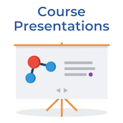

Teaching Strategies
Hover over the cards to learn more about how you can use H5P for teaching and learning!
|  |  |
Information and Instructional Technology Services (IITS) | Academic Technology Services (ATS)
If you have questions, please reach out to us directly at cchelp@csusm.edu